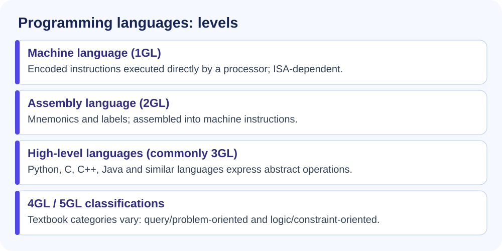
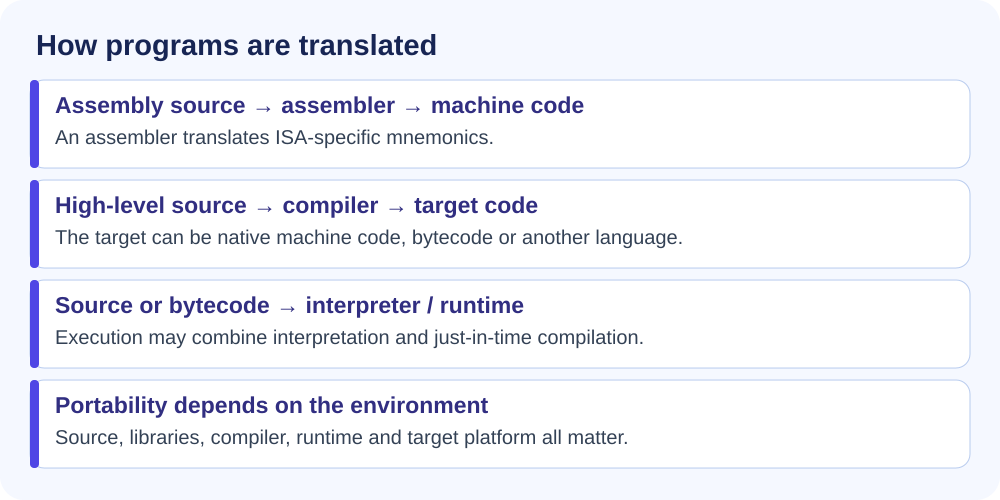
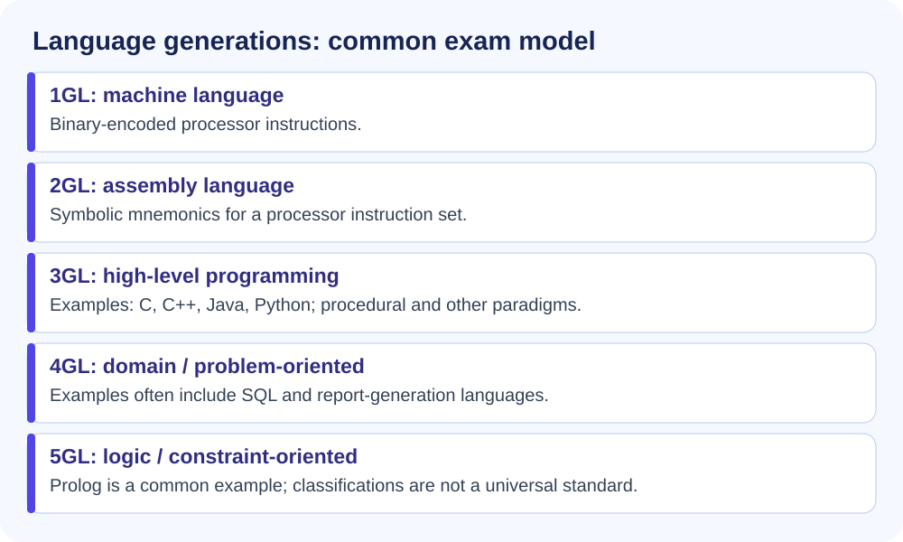
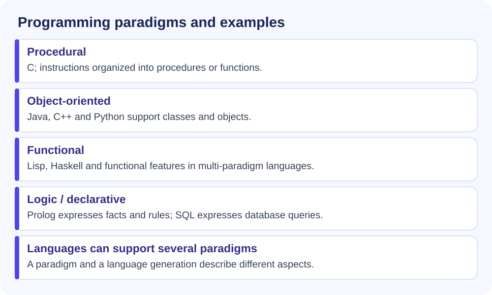

| Basis | Machine Language (1GL) | Assembly Language (2GL) |
|---|---|---|
| Language | Binary (0,1) | Mnemonics |
| Translator | Not required | Assembler |
| Ease of use | Very difficult | Comparatively easier |
| Speed | Direct native instructions; speed depends on implementation | Performance depends on implementation |
| Portability | Not portable | Not portable |


| Generation | Language Level | Examples from source | Key Description |
|---|---|---|---|
| 1GL | Machine Language | Binary Code (0 & 1) | Directly understood by CPU. |
| 2GL | Assembly Language | x86, ARM Assembly | Uses mnemonics such as ADD, MOV. |
| 3GL | High Level Language | C, C++, Java, Python, COBOL, FORTRAN, BASIC, Pascal, Ada, Ruby, Swift | English-like, structured, portable. |
| 4GL | Very high-level/domain-oriented language (classification varies) | SQL, PL/SQL, MATLAB, SAS, R (classification varies), FoxPro, Oracle Forms | Non-procedural, less coding, WHAT-oriented. |
| 5GL | AI / Logic Based Language | Prolog, Mercury, OPS5 (logic/constraint-based examples); Lisp is a high-level language historically used in AI | Used in AI & expert systems. |
